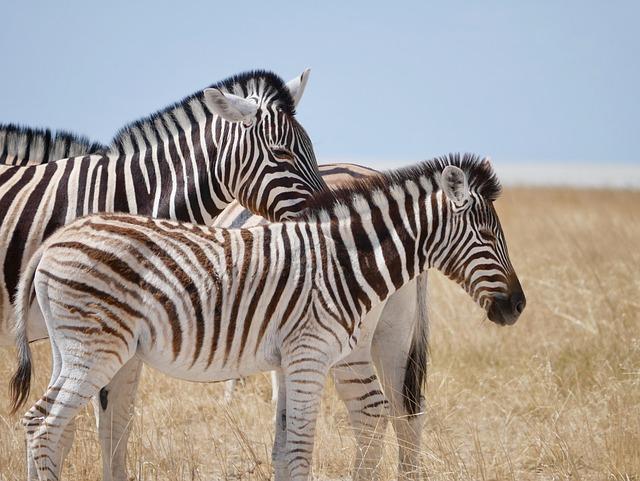
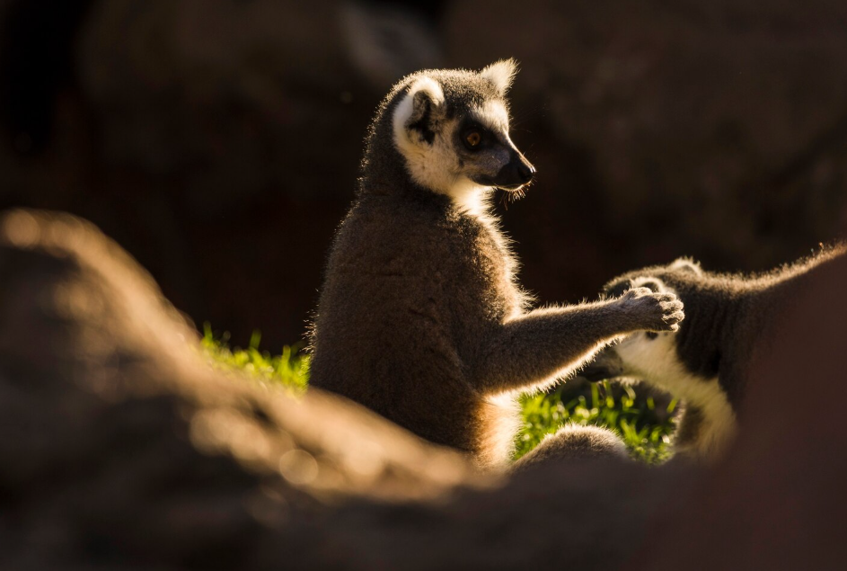

Zebra
Zebra to roślinożerne zwierzę z Afryki, znane z charakterystycznych czarno-białych pasów. Żyje w stadach i jest szybka, co pomaga jej unikać drapieżników.
Lemur
Lemur to mały ssak z Madagaskaru, znany z dużych oczu i długiego, puszystego ogona. Żyje w grupach, głównie na drzewach, i jest aktywny głównie nocą. Występuje w różnych gatunkach, z których wiele jest zagrożonych.